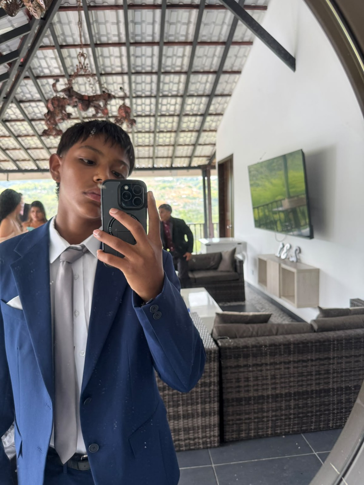
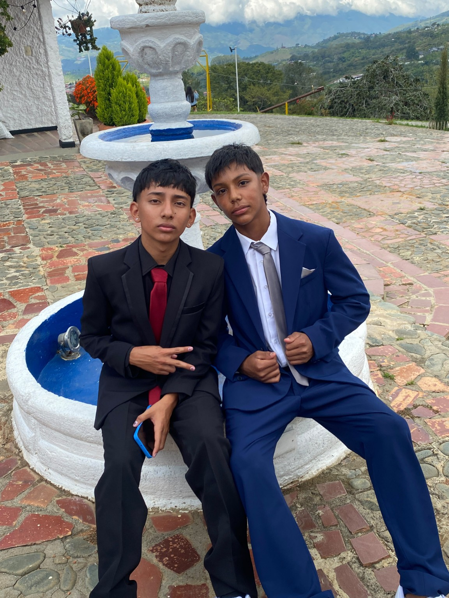

A corto plazo
Terminar mis estudios, mejorar mis conocimientos, aprender cosas nuevas y prepararme para ingresar a la universidad.
Construyendo mis sueños, un paso a la vez
Conocer mi proyectoSoy una persona con sueños, metas y muchas ganas de salir adelante. Me considero alguien que quiere aprender, superarse y aprovechar las oportunidades que se presenten en mi vida.
Mi propósito es convertirme en una persona exitosa, cumplir mis objetivos, ayudar a mi familia y construir un futuro lleno de oportunidades.

Todo comienza con un sueño y se construye con acciones.
Terminar mis estudios, mejorar mis conocimientos, aprender cosas nuevas y prepararme para ingresar a la universidad.
Ingresar a la universidad y estudiar Ingeniería de Sistemas. También quiero aprender programación, desarrollar proyectos y adquirir experiencia.
Graduarme como ingeniero de sistemas, conseguir un buen empleo, tener estabilidad económica y cumplir mis sueños.

Convertirme en un gran profesional y sentirme orgulloso de todo lo que he conseguido.
El futuro que quiero construir empieza con mis decisiones de hoy.
Quiero estudiar Ingeniería de Sistemas, convertirme en un profesional y trabajar en el mundo de la tecnología y la programación.
Deseo tener una vida tranquila, apoyar a mi familia, conocer nuevos lugares y compartir momentos especiales con las personas que quiero.
Con esfuerzo, disciplina, dedicación, responsabilidad y nunca dejando de aprender. Sé que habrá dificultades, pero trabajaré para superar cada obstáculo.
“No importa qué tan lento avances, lo importante es nunca dejar de avanzar”.
Mi futuro depende de las decisiones que tome hoy.